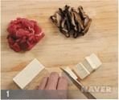
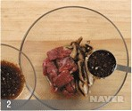
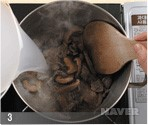
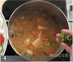

재료 및 분량
-양념장
청장9g(1/2큰술), 다진 파 4.5g(1작은술), 다진 마늘 2.8g(1/2작은술), 깨소금
0.5g(1/4작은술), 후춧가루 0.3g(1/8작은술), 참기름 4g(1작은술)
- 쌀뜨물 700g(3 1/2컵)
- 된장 85g(5큰술)
- 두부 250g(1/2모)
- 고춧가루 2.2g(1작은술)
- 청고추 15g(1개)
- 홍고추 20g(1개)
- 파 20g
재료준비
- 쇠고기는 핏물을 닦고, 가로·세로 2.5cm 두께 0.2cm 정도로 썬다.
- 표고버섯은 물에 1시간 정도 불려(50g), 기둥을 데고 닦아 길이 4cm, 폭,두께 0.5cm 정도로 채
썬다.
- 두부는 가로 2cm 세로 3cm 두께 1cm 정도로 썬다.
- 쇠고기와 표고버섯은 한데 섞고 양념장을 넣어 무친다.
- 청,홍고추와 파는 길이 2cm 두께 0.3cm 정도로 어슷 썬다 (청고추 10g, 홍고추 12g, 파 15g)
만드는법
- 냄비를 달구어 쇠고기와 표고버섯을 넣고, 중불로 낮추어 2분 정도 볶다가 쌀뜨물을 붓는다.
- 된장을 풀어 넣고 센불에 4분 정도 올려 끓으면, 중불로 낮추어 10분 정도 더 끓인다.
- 된장국물의 맛이 충분히 우러나면, 두부와 고춧가루를 넣고 2분 정도 끓이고, 청·홍고추와 파를 넣어 1분 정도
더 끓인다.



 출처 :
네이버지식백과
| 가열시간 |
조리과정 |
불조절 |
| 재료준비 |
쇠고기·채소 손질 |
|
| 0min |
쇠고기·표고버섯 볶기
쌀뜨물 붓고 된장 풀기 |
중불 2분
센불 4분, 중불 10분 |
| 10min |
두부,고춧가루 넣기 |
중불 2분 |
| 20min |
청·홍고추,파 넣기 |
중불 1분 |